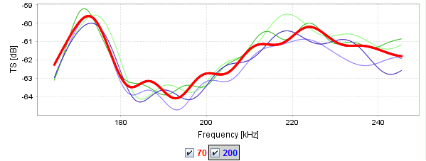
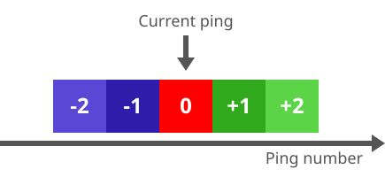

The TS-frequency spectra are computed from the depth ranges in the active regions identified as individual targets in each ping.
Multiple active regions in the same ping are allowed. The target identification is performed on all available channels. Spectra from different
channels are coloured differently, the graphs corresponding to the currently active channel are bold.

Screenshot of the BB TS(f) view.
In addition to the current ping, the spectra from a number of previous and subsequent pings are plotted. The
previous pings are displayed in shades of purple, subsequent pings in shades of green. Darker colours indicate
pings closer to the current ping, lighter colours pings further away.

Illustration of the colour scheme coding previous and subsequent pings using
shades of purple and green, respectively.
Settings
Target detector settings
A single target is defined by its peak sample and its vertical extent. A peak sample is a sample with an echo strength (squared absolute values of
averaged pulse compressed signal) larger than all the samples within a certain threshold distance. This threshold is automatically determined using
Ridler and Calvard's (1978) classical iterative threshold selection method, imposing the sent pulse length as upper bound.
The vertical extent of the target consists of all samples to either side with echo strength lower than the peak echo strength until a local maximum with
relative echo strength below Pulse length determination level is encountered.
The target detector is the Peak algorithm in the
TS detection module
in KORONA.
The available parameters for the target detector are:
Min TS:
Minimum corrected TS value to be detected [dB].
Min echo length:
Minimum echo length (relative to pulse length). NB: may be << 1 for pulse compressed data!
Max echo length:
Maximum echo length (relative to pulse length). NB: may be << 1 for pulse compressed data!
Max gain compensation:
Maximum (one way) gain compensation [dB].
Do phase deviation check:
Check this if phase deviation check should be performed.
NOT recommended for broadband data.
Max phase deviation:
Max phase deviation [phase steps].
Spectrum extraction settings
The vertical extent of the target used for calculation of its frequency spectrum is determined by the chosen
Target extent for FFT mode.
The available options are the following:
AUTOMATIC: The target extends as extracted by target detector.
MANUAL: The extent is manually specified, either symmetrically or asymmetrically around the detected peak.
REGION: The entire depth range of the region is used. Target detection is not performed.
Further parameters are:
Manual target extent symmetrical:
The vertical extent of each detected target is centered around the peak if checked.
Several parameters for adjusting the presentation of target spectra are available.
Ping radius:
Number of pings on either side to use. The number of previous and subsequent pings to be
displayed along with the current ping (mouse position in echogram). In total, the view displays 2 ×
Ping radius + 1 spectra.
Frequency windowing:
Percentage of extremal frequencies to be discarded (two-sided). The view shows the
central (100 - 2 × Frequency windowing) % of each frequency band.
Frequency resolution:
Frequency resolution in display. The distance in kHz between the individual
frequencies displayed in the plot. The spectrum is computed at full resolution (determined by the extent of the depth range containing the time
signal) and resampled.
Plot narrowband:
If this option is selected, then targets detected by the TS module
are shown for frequencies with narrowband data.
X-axis:
Mapping of frequencies along x-axis.
Auto-adjust axes:
Automatically adjust the x-axis and y-axis when the plot is updated.